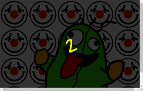
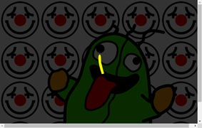
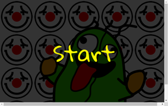
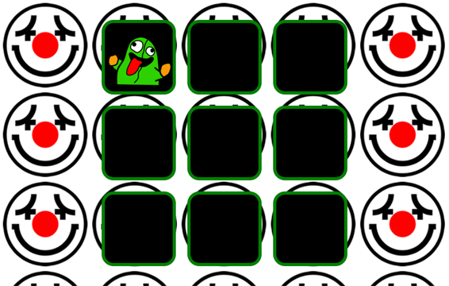
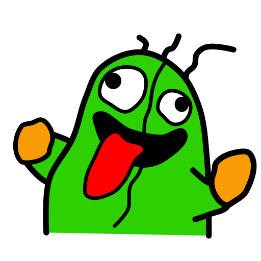
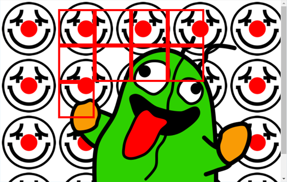
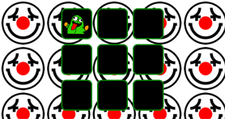
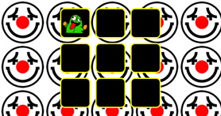
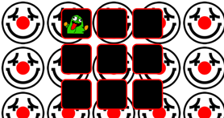
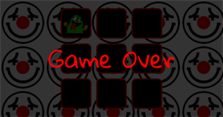

If you like, you can go to Google font and change the font to anything you like
The script structure has been given
You will follow the instructions to write your own code inside the given functions
2. The Countdown Screen
In the starting HTML file, a countdown screen is given to you like this:
<!-- The countdown screen -->
<div id="countdown">3</div>
The initial countdown time (3) is already shown inside the div
As the first task, you need to make the screen counting down the time from 3 to 0
At time 0, you will display the text 'Start' and then start the game
2.1. Making the Countdown Timer
You have learned how to use the setTimeout() function to make a countdown timer
You can read the notes and the examples for how to do that
In this game, you will make a similar countdown timer for the countdown screen
The countdown() function has been given to you
function countdown() {
// Decrease the remaining time
// Continue the countdown if there is still time;
// otherwise, start the game when the time is up
}
Starting the countdown() Function
You need to first start the function somewhere in the ready event
$(document).ready(function() {
// Start the countdown screen
});
To do that, you have to use setTimeout() to start the countdown() function there
Obviously, you will start the function 1 second after the page is ready
Finishing the countdown() Function
The content of the countdown() function is very similar to the course example
A global variable timeRemaining has been given to you to store the time remaining so far
let timeRemaining = 3; // Amount of time remaining for the countdown
For the countdown() function:
The remaining time is shown inside the countdown screen
When the time is up, you show 'Start' on the screen instead of '0'
Finally, at the end of the countdown you should run the given startGame() function to start the game
function startGame() {
...
}
After you finish the countdown() function, your countdown screen should work like this:
At the start...

Count to 2...

Count to 1...

Before starting the game
You will complete the startGame() function in the next part of the lab
3. Starting the Game
There are a few things you have to prepare before the player starts to play the game:
Hide the countdown screen
Fix the appearance of the monster and the holes
Show the monster for the first time
Set up the click event for the monster
3.1. Hiding the Countdown Screen
When the countdown timer counts to 0, the game starts and you need to hide the countdown screen
You could have simply used the hide() function to hide the screen
However, doing that is similar to changing the CSS display property to none
so that the HTML element, i.e. the screen would disappear immediately
To make a more interesting effect, you can experiment with fadeOut() and slideUp()
Typically you would want to have a quick animation so that
the duration you give to these functions is likely to be smaller than 1 second
3.2. Fixing the Appearance of the Monster and the Holes
In this part, you need to make the game area to have 9 holes in it, with the monster in the first hole initially
For example, the following image shows what you should have after fixing their appearance:

Arranging the Holes
The 9 holes are already given as 9 divs, as shown below:
<!-- This div contains all holes -->
<div id="game-area">
<div class="hole">
<!-- This is the monster -->
<img id="monster" src="nomore.png" alt="Nomore monster">
</div>
<div class="hole"></div>
<div class="hole"></div>
<div class="hole"></div>
<div class="hole"></div>
<div class="hole"></div>
<div class="hole"></div>
<div class="hole"></div>
<div class="hole"></div>
</div>
You simply need to use appropriate CSS style properties to put them in a correct arrangement
One useful CSS property that can help you do that is the float property
The property can arrange the divs so that they 'float' inside the document, rather than occupying a row of space
For example, the monster image shown on the right has been floated to the right of the page using float: right

You can quickly experiment the property with the holes in the game by putting float: left,
a fixed size and border inside the style rule of the divs, for example:
vmin is a unit, which means a percentage of the minimum of vh and vw
The display will likely become this:

Certainly, you do not make your holes looking like the ones from above
Your holes should have these properties:
A green border
They occupy 1/3 of the game area in each dimension for each hole
Note that the size of the game area is 90vw x 90vh and therefore each hole should be 30vw x 30vh in size
A black background
You can consider some properties that you have used in the previous lab for this lab as well
Arranging the Monster
The monster, as an HTML image, is initially put inside the first 'hole'
To make it fit inside the hole, you can adjust the size of the monster image
For example, you can set the size of the monster to be relative to the size of each hole, i.e. using %
Before you finish this part, you need to hide the monster using the display property, i.e.:
#monster {
...
display: none;
}
This is because the player is not supposed to see the monster anywhere at the start
3.3. Showing the Monster
A showMonster() function has been given to you so that you can use it to show the monster
function showMonster() {
// Find the target div randomly and move the monster
// to that div
// Show the monster
$("#monster").show();
// Hide the monster later
}
You can already run the function to show the monster as the code has been given
Let's try to do this inside the startGame() function
For the game, rather than showing the monster immediately, you need to show the monster after a certain interval
The time you need to wait has been initialized in the timeToShowMonster variable already
let timeToShowMonster = 2000; // Amount of time to show the monster
let timeToHideMonster = 2000; // Amount of time to hide the monster
Therefore, for the first time you show the monster, you will use a setTimeout() to run the showMonster() function
If you do that correctly, your game will show the monster in the first hole, 2 seconds after the countdown
Picking a Random Hole
Now, you will improve the way the monster appearing in the game
If you use showMonster() now, it will always show the monster in the first hole
You need to make the monster appearing in a random hole in the game area
To do that, you will improve the showMonster() function, before the line of code which shows the monster
If you run $(".hole") now, the JQuery object will contain all the 9 divs
You just need to find a way to randomly pick one of the divs from there
First, you can use Math.random() again to give you a random number between 0 to 8
This random number will be the index of the div that you want to retrieve
Using the index, you can pick a div from the JQuery object like this:
let div = $(".hole").eq(...random div index...);
You can then move the monster into the above div using a JQuery function called appendTo()
This function is a similar function to the DOM function appendChild()
For example, if monster is the monster in the game, you will be able to move it inside the div using this code:
monster.appendTo(div);
Once you have finished this, your monster should appear in a random hole at the start of the game
3.4. Working with a Click Event
Now that your monster is in a hole, you can try to hit it with a hammer, i.e. clicking the monster with your mouse
Certainly, it won't destroy your monster because you need to write the code for it
To do that, you will have to set up a click event listener for the monster image
Setting up the Click Event
You will do this inside the startGame() function
The comments inside the function has already suggested what you need to do:
// Set up the click handler of the monster
// - Clear the previous timeout
// - Hide the monster
// - Adjust the monster time
// - Show the monster later again
You will not finish all the above in this part of the lab but you will first make the callback of the click event here
You will use the on() function to set it up, i.e.:
// Set up the click handler of the monster
$("#monster").on("click", function() {
...
});
Completing the Click Event
There are four things you need to do inside the callback
You will finish two of them here and the rest later in the lab
First, once you click on the monster, you will make it disappear, destroy it
This is very easy to do as you should know very well the use of show() and hide() by now
If you hide the monster and it never comes back, there will be no game to play
Therefore, inside the callback, you need to schedule the code to show the monster again later
This will just be the same code that you have done when you show the monster the first time
If you can do the above two things correctly, you will be able to kill the monster by clicking on the monster;
the monster will then reappear after 2 seconds
This is already some sort of a playable game
4. Finishing the Game Flow
At this stage, the game can show the monster, you can kill the monster and the monster can reappear
In this part, you will make it much more like a game by:
Making the monster jump around the holes, i.e. disappear and reappear in different holes
Creating a game over situation
4.1. Hiding and Showing the Monster (again)
To hide the monster, you can extend the showMonster() function
At the end of that function, you can schedule a timeout to hide the monster automatically
You have already been given the hideMonster() function to do just that
function hideMonster() {
// Change the life and the colour of the holes
// If the game is over show the game over screen
// Hide the monster
$("#monster").hide();
// Show the monster later again
}
The amount of time that you need to wait before hiding the monster is controlled by the timeToHideMonster variable
If you have used a timeout correctly in the showMessage() function,
you will see your monster appearing and then disappearing after 2 seconds
However, after disappearing, the monster will not show up again!
Remember that you have used a timeout to show the monster again after you click on it
You will do the same inside the hideMonster() function so that your monster will reappear after a while
It becomes something like this: showMonster() ➜ 2 sec later ➜
hideMonster() ➜ 2 sec later ➜
showMonster() ➜ 2 sec later ➜ ...
So now, if you do not click on the monster, the monster will appear and disappear continously inside the game area
Modifying the Click Event
It seems that most of the things are working well
However, if you click on the monster to kill it a couple of times, you will find the monster suddenly appearing very frequently
If you look at the code, you will find:
In the click event, you hide the monster and schedule a timeout to show the monster again
In the showMonster() and hideMonster() functions,
a timeout is used to hide the monster and another one to show the monster
There are two different parts of the code that makes timeouts to do similar things
If you keep on killing the monster, there will be a lot of such timeouts
The solution is then to keep only one timeout for the same purpose at all time
Inside the click event, you need to hide the monster immediately
In order to avoid hiding the monster again with a scheduled timeout, you need to 'clear the previous timeout'
The previous timeout has been set at the end of the showMonster() function that you have done previously
You will now need to use a variable to remember the timeout so that you can clear it inside the click event
A global variable has been given to you for this:
let hideMonsterTimeout; // Timeout id for hiding the monster
Then, you task is to use this variable to clear the hide monster timeout
when you click on the monster, i.e. inside the click event like this:
// - Clear the previous timeout
clearTimeout(hideMonsterTimeout);
4.2. Game Over
The game never ends now
Let's make a game over situation for the game
If you look at the top of the script, you will find a life variable already given to you:
let life = 3; // The player's life
You will work on this life variable
Decreasing the Player's Life
When the player fails to kill the monster once, the player's life will be reduced by one
This happens when the monster hides itself, i.e. inside the hideMonster() function
Therefore, when that happens, you write the code to decrease the player's life
At the same time, it would be nice to have some kind of indicator to show the player that he/she is in danger of losing the game
A simple way to do this is to use a different border colour for the holes to show the current status:
When life is 3, the border is green, i.e. the initial colour of the hole

When life is 2, the border becomes yellow

When life is 1, the border becomes red

When life is 0, no need to do anything as the game is over

The border colour can be changed easily using the css() function on the holes in the game area, i.e.:
$(".hole").css("border-color", ...new colour...);
Showing the Game Over Screen
When the life value reaches 0, the game is over
It would be nice to show a game over screen
The screen has already been given to you:
<!-- The gameover screen -->
<div id="gameover">Game Over</div>
You only need to show it up when the game is over
Again, you can experiment a bit the way to show it up, e.g.
you can use show(), fadeIn() or slideDown() to show the screen
Making the Game Harder
To make it easier to reach the game over screen, you can make the game harder every time the player successfully kills a monster
This is done by making the timeout shorter, i.e. using a smaller timing for the timeouts
Remember that the timeouts are controlled by the timeToShowMonster and timeToHideMonster variables,
you can reduce their values appropriately inside the click event to make the game harder progressively
For example, you can subtract 100 from both variables each time you kill the monster
{kind=link}
{kind=link}